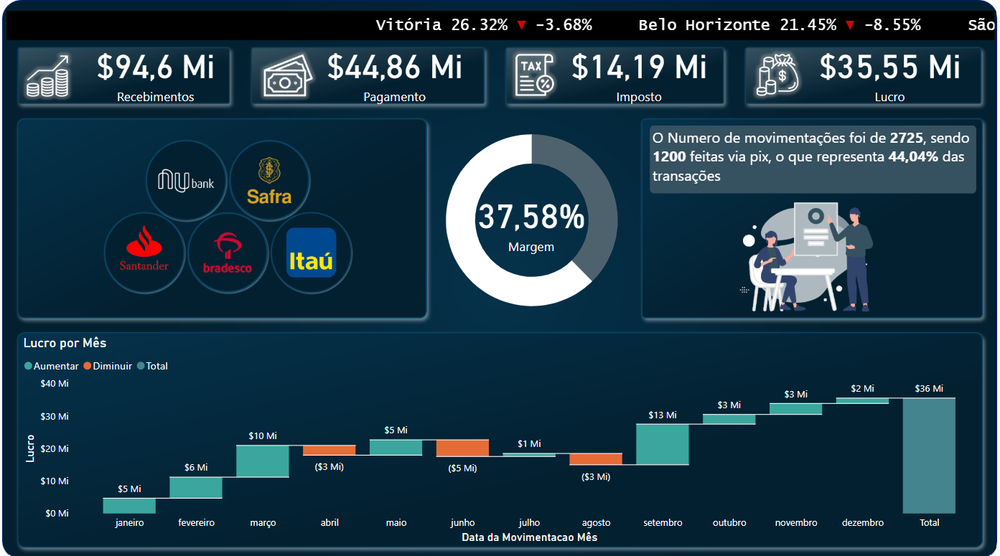
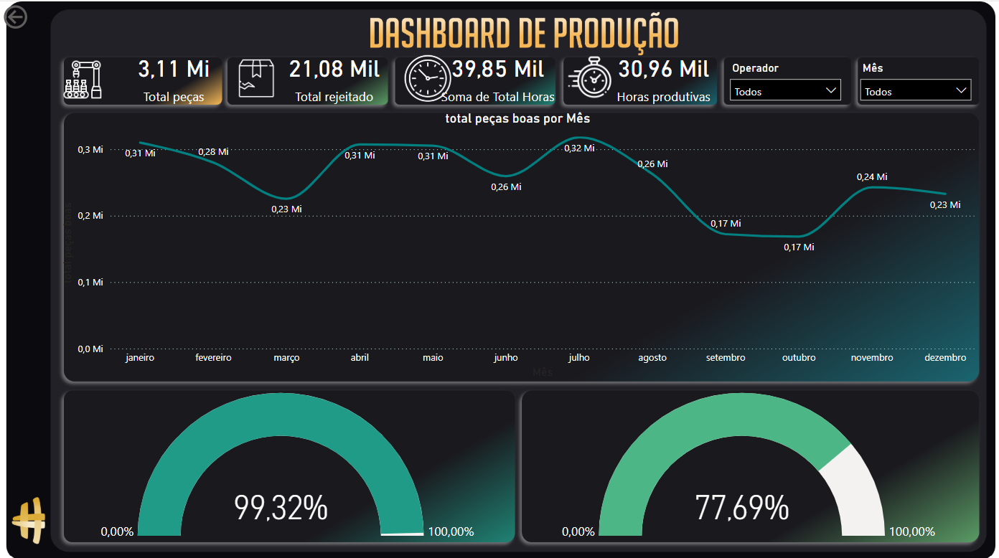
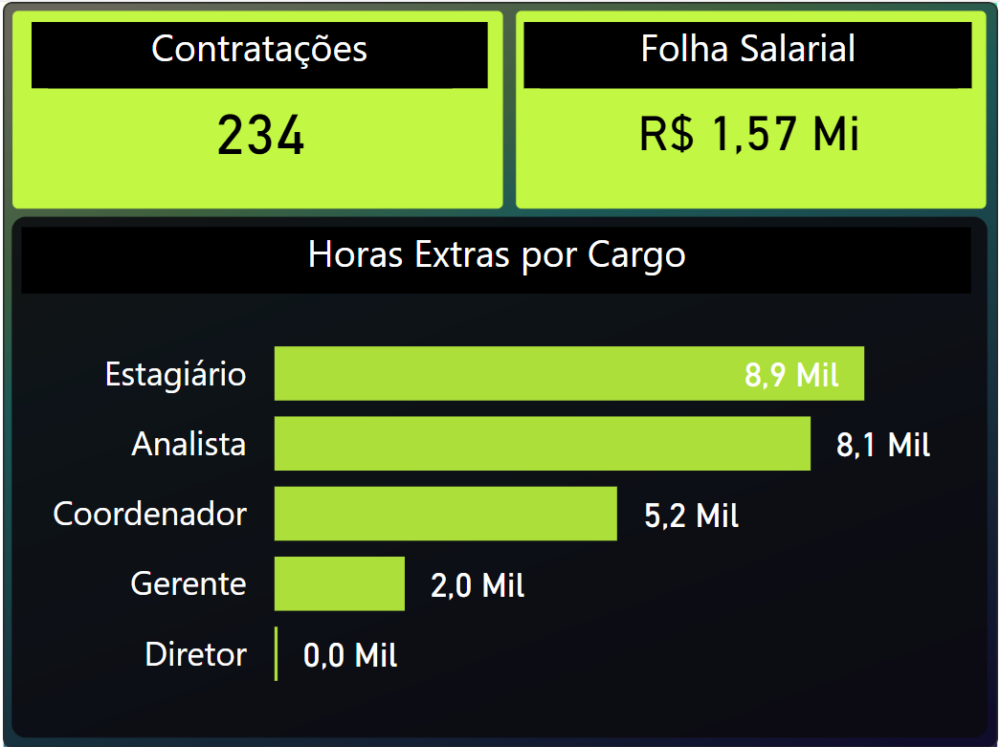
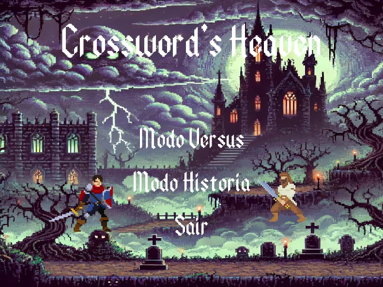
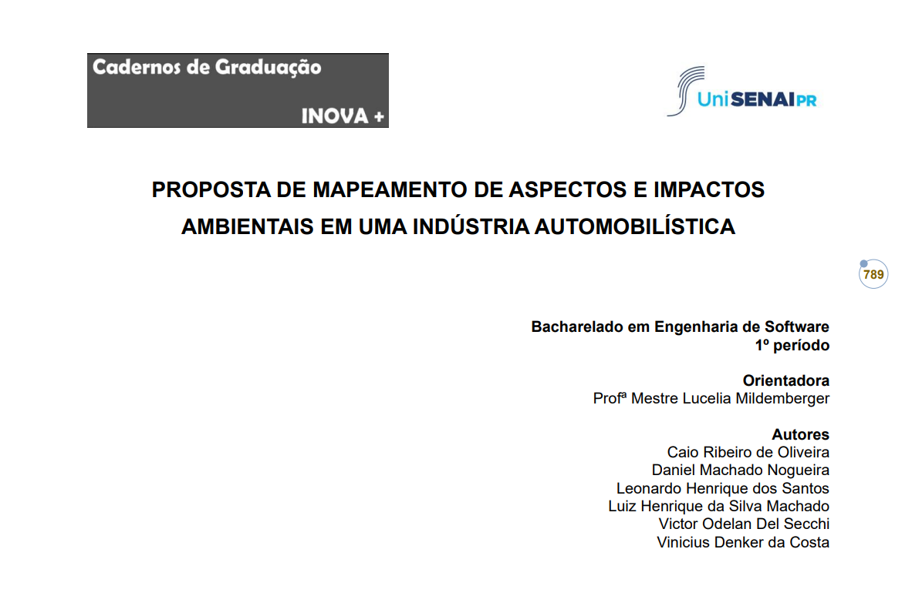
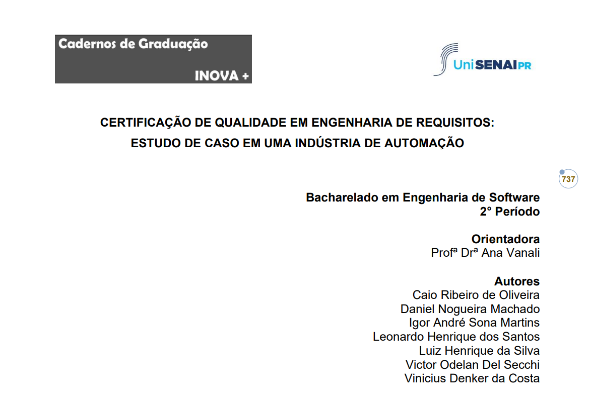

I am driven by the challenge of blending technology, creativity, and analytics to deliver solutions that empower people and businesses. I believe the future belongs to those who extract value from data and connect innovative ideas to practical execution.






Bachelor's degree in progress focused on software development, databases, design, and systems architecture.
Creation of dashboards with Power BI for data analysis and business information visualization.
One of the largest and most traditional language schools in Brazil! Currently at Masters 2 level.
machadoluiz659@gmail.com
+55 41 98732-1919
Curitiba, PR - Brazil
Languages: Portuguese (Native), English (Advanced), Spanish (Basic)